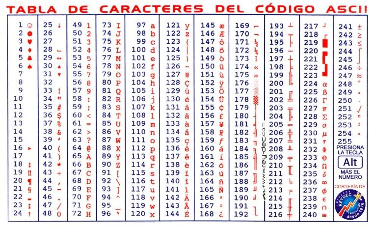
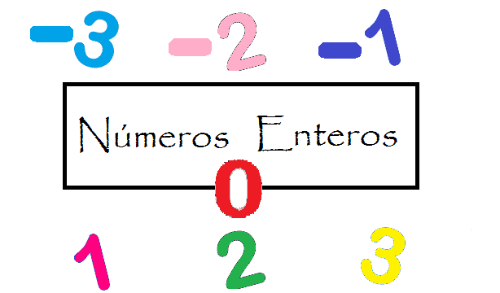
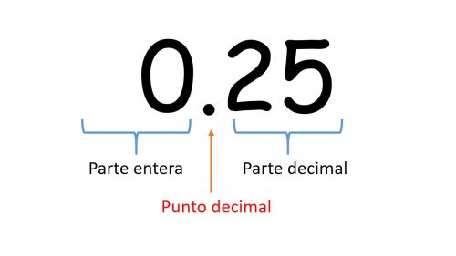

Tipos de datos
Los tipos de datos son muy importantes para representar los valores a usar correctamente. Para evitar tener un comportamiento inesperado al intentar sumar un numero a un caracter. Esto suele dar error en algunos lenguajes que esperan una conversion de tipo.
Buleano
Los buleanos son un tipo en el que solo existen dos valores verdadero o falso, este tipo de datos son los que controlan el flujo de el programa debido a que son los que se usan para las condiciones y para el control de los bucles tanto para los while como los for incluso para hacer que las funciones recursivas no desborden el callstack.
Caracter
Los caracteres son un tipo de dato que representan un caracter puede ser de 8bits para ascii o 16bits para unicode, esto depende de el lenguaje que se este usando, incluso hay lenguajes que implementan directamente las cadenas de caracteres listas que solo tienen caracteres.
Entero
Este tipo de dato como su nombre lo sugiere almacena un valor numerico sin decimales aunque hay que tener en cuanta que estos enteros pueden ser de 8, 16, 32, 64 o 128 bits y estos pueden o no incluir signo.
Los enteros llevan signo a no ser que se le especifique lo contrario a los programas diciendoles que el tipo de dato es un entero sin signo.
Punto Flotante
Los Punto flotante tambien conocidos como decimales son aquellos que contienen numeros que pueden ser no enteros teniendo una parte entera y una parte fraccionaria haciendo que se pueda hacer calculos pequeños. Estos se guardan en notacion cientifica.
Nota: No se recomienda usar para valores importantes porque existen algunos errores de calculo como con 0.1 + 0.2 que suele dar un valor erroneo como 0.30000000000000004 en la mayoria de los lenguajes.
